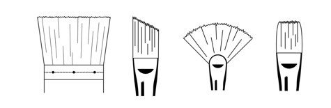

CSS는 HTML을 아름답게 꾸며주는 디자이너의 언어입니다. 화가가 붓을 만드는 법을 알 필요는 없지만, 붓을 만드는 사람보다 붓 질은 훨씬 잘해야 할 것입니다. 붓 질하는 법을 모른다면 표현하고자하는 것을 제대로 표현하는 것이 어려울 것이니까요. CSS는 디지털 컨텐츠를 생산하는 사람들에게는 붓 질과 같은 것이 아닐까 싶습니다.
CSS를 공부하기 위해서는 선행해야 할 것이 있습니다. 바로 HTML 입니다. 만약 html에 대해서 전혀 모르신다면 여기서 출발하시면 안됩니다. 제가 추천 드리고 싶은 선행 수업은 두가지 입니다.
웹의 전체적인 모습이 보고 싶다면 위의 수업 중 '생활코딩 웹에플리케이션 만들기' 수업을 추천합니다. 혹은 html을 좀 더 깊게 공부하고 싶다면 위에서 '생활코딩 html 수업'을 추천드립니다. 물론 html에 정통해야 할 이유는 전혀 없습니다. CSS가 급하게 필요하시다면 html이 무엇인지 정도만 파악하고 CSS 학습을 시작하셔도 전혀 문제 없습니다.